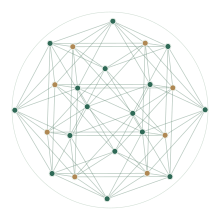

Featured research / 2026
A quaternionic construction behind 841-point kissing arrangement in ℝ¹²
Three quaternionic factors offer a new perspective on kissing arrangements in twelve dimensions.
Explore the paper
Mathematics · Nazarbayev University
I am an Assistant Professor in the Department of Mathematics at Nazarbayev University in Astana, Kazakhstan.
My research explores the mathematical foundations of learning and optimization, from kernel methods and dimension reduction to constraint satisfaction. My recent work also investigates kissing arrangements and the geometry of high-dimensional spaces.
Three quaternionic factors offer a new perspective on kissing arrangements in twelve dimensions.
Explore the paper
“Predicate description of supplementary constraints in pattern recognition problems”
“Some estimations of generalization capabilities of learning algorithms”